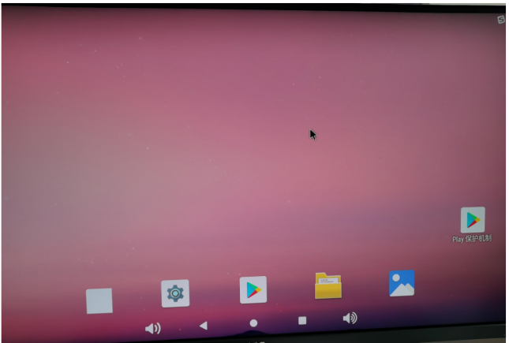
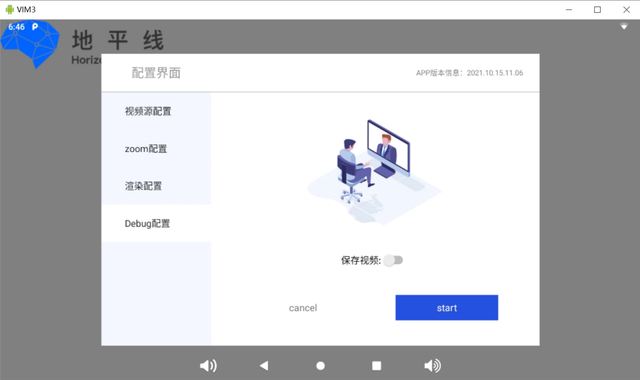
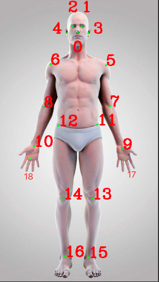

APP用户使用说明
特别说明：请严格按照下面描述步骤操作
x3端操作说明
系统总集成图（安卓板可以使用USB供电，X3使用电源适配器供电）
1. 注意，先给X3板子上电(等待启动完成（大约3s）之后在给安卓上电)。
2. 安卓板上电，等待安卓板启动完成。

android app使用
打开APP
双击APP后会进入如下页面
配置界面

视频源配置

目前视频源配置页面可配置分辨率和视频编码格式，分辨率可配置4K，1080P，720P，不做配置更改则默认1080P

编码方式可配置MJPEG，H264，不做配置更改则默认H264
ZOOM配置
点击“ZOOM配置按钮”进入zoom配置页面

目前ZOOM配置页面可配置发言人追踪模式
发言人模式可配置关闭，单人模式，对讲模式，画中画，不做配置更改则默认关闭
渲染配置
渲染配置（算法控制）
点击渲染配置按钮，进入渲染界面
目前支持算法切换如图上所示：可通过选中来切换，当前支持的算法有 :
1. 是否开启全图检测，默认选中
2. 是否开启抠图检测，默认选中
3. 是否开启人脸106点关键点，默认选中
4. 是否开启人手关键点，默认选中
5. 是否开启静态手势识别，默认选中
6. 是否开启动态手势识别，默认选中
7. 是否开启年龄检测，默认选中
8. 是否开启matting，默认不选中
Debug配置
点击Debug配置按钮，进入Debug配置界面

目前Debug配置可选中是否保存视频，不做配置更改则默认不保存
版本信息显示
版本信息位于配置页面右上角

版本信息界面显示当前APP版本的信息
START按钮，CANCEL按钮
点击START按钮会启动程序，点击CANCEL按钮则配置页面消失，会变成如下页面

点击右上角按钮，则配置界面重新弹出
手势控制
三指捏合，为PinchMove，然后拖动，可以控制进度条
手鼠控制
打开手鼠（比耶✌手势即胜利手势，会进入九宫格界面）

会进入九宫格功能，视频界面隐藏，九宫格功能共三个界面，第一个为首页，第二个为电影，第三个为音乐
当浮标悬浮在相应的控件上控件会进行一定的放大

当对对应位置控件进行点击操作时，中间控件的显示位置会变成对应位置的图片
例如下图是点击右上角第一个控件的效果，中间会变换成右边第一个控件对应的图片
当点击电影按钮时，进入第二个界面，电影界面。
当点击音乐按钮时，进入第三个界面，音乐界面。
切换控制人（打开手鼠以后，比耶✌手势）
移动手鼠（打开手鼠以后或切换控制人以后，移动控制手）
注意：控制手不可移动到屏幕以外，否则需要重新比耶手势，重新锁定控制手

确定手势（手势为OK即为点击确定）
后退手势（大拇指向右）
退出手鼠（比六六六手势）
常见的问题
su权限
如图，查看日志发现su权限被拒，是由于设备缺少root权限导致
视频帧收不到
检查X3 /userdata/deploy/configs/visualplugin_body.json下的display_mode，UVC是2
将日志设置为debug,查看UVC节点是否打开
智能帧收不到
检查Demo中HobotApplication的getRootPermission是否执行完毕
检查android系统video节点权限
检查usb0是否生成，ip是否配置成功
recognize.json未配置
日志中报错 (hero.cpp:103): Failed to get config!，请检测recognize.json是否指定，需要将该文件指定给X3 sdk
智能数据闪屏
智能信息存在一些drop数据，根据smart_type==1判断，这些数据需要丢弃
视频花屏
App中有保存视频的选项，请将选项打开，导出查看收到的数据，如app收到的就是花屏，在X3端保存视频内容查看，如若app收到的不是花屏，显示花屏，请检查编解码问题
Codec.dequeueOutputBuffer 返回-1
检查一下解码器支持的视频尺寸
检查支持解码的视频格式
检查输入的视频数据
视频延时问题
视频需要和智能帧做同步显示，根据返回的时间戳匹配数据送显，有一定的时间延时，目前Demo解码dequeueInputBuffer，dequeueOutputBuffer是在一个线程，可以将其拆分到两个线程
getConfig timeout
确认X3是否正常启动，并且程序启动正常
USB是否连接，确认下连接是否正常
Demo中注册了USB广播，在广播之后进行初始化操作
上一次程序结束需要一定的时间，确保上次程序结束在重新启动程序
HorizonCreate和HorizonGetConfig最好有5s的延时
骨骼点
